모호한 이름을 플레이 의미로 바꿨습니다
기존 RPG 데이터베이스 용어가 스타듀형 생활 게임에서 무엇을 뜻하는지 드러나도록 재분류했습니다. 이제 “수집”이나 “캐릭터” 같은 넓은 말 대신, 저작자가 만드는 대상과 런타임 결과가 제목에 함께 보입니다.
핵심 요소를 8장의 제품 아트로 묶었습니다
아래 이미지는 외부 게임 스크린샷이 아니라 이 프로젝트를 위해 생성한 원본 카드입니다. 에디터와 런타임의 생활 장부에서 실제 사용되고, 내보낸 플레이어 자산 목록에도 등록됐습니다.
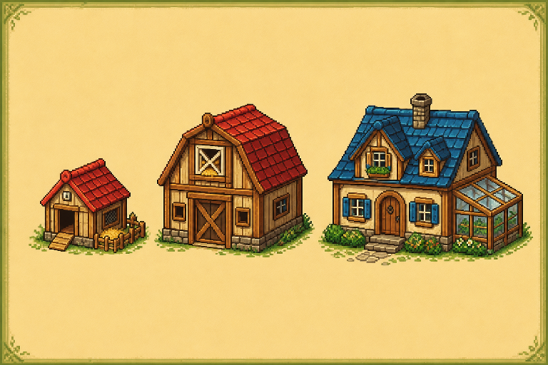
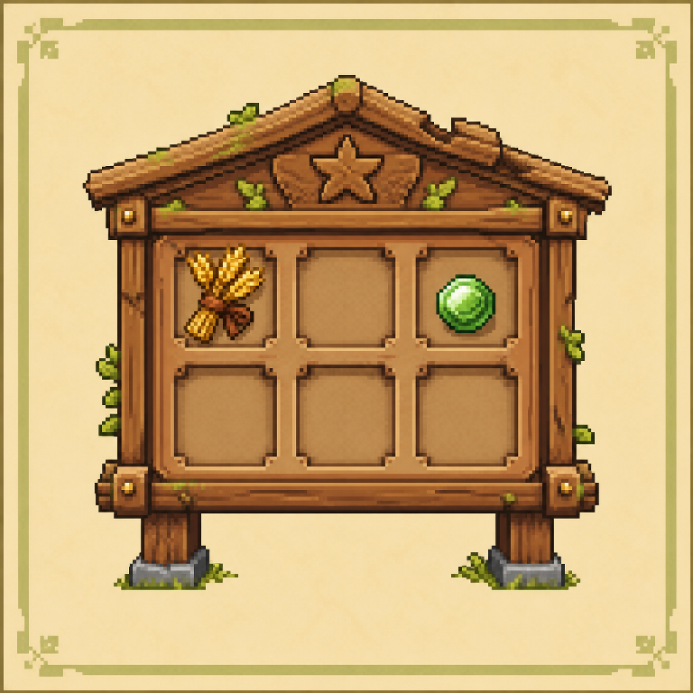
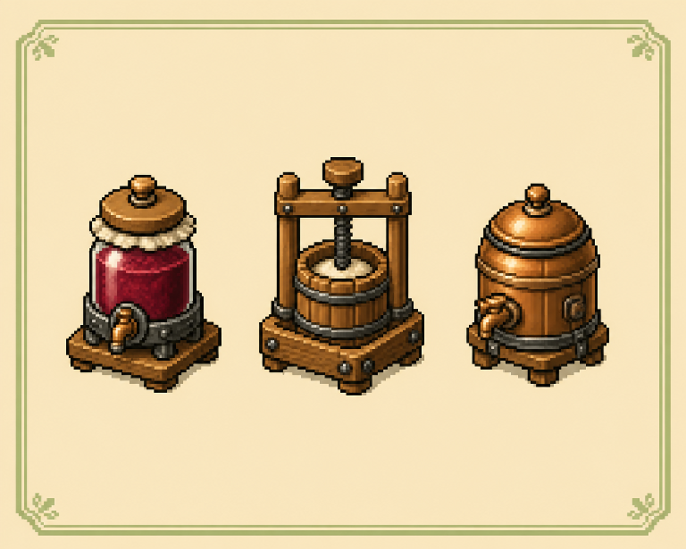
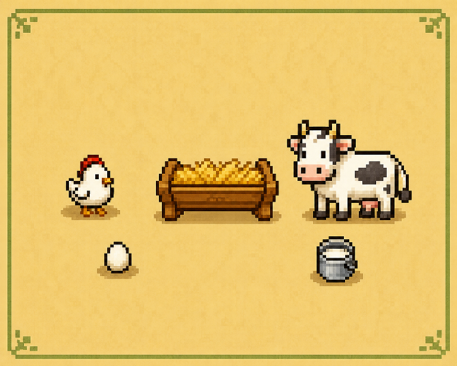
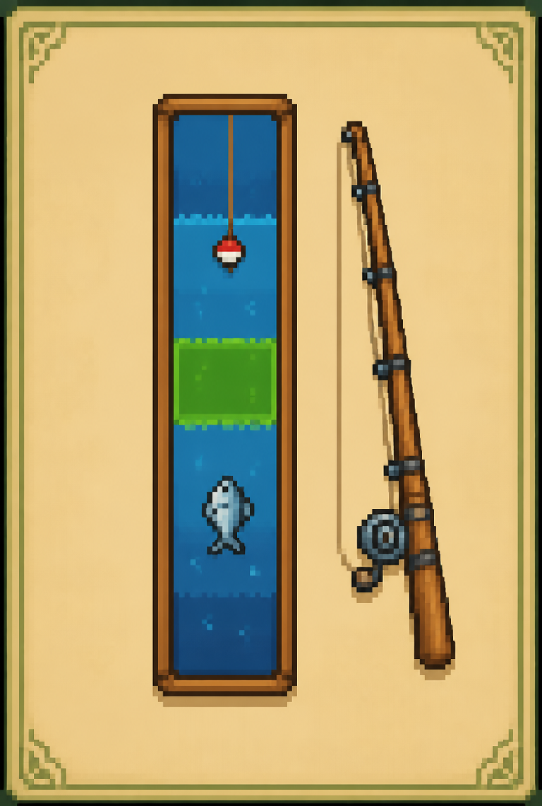
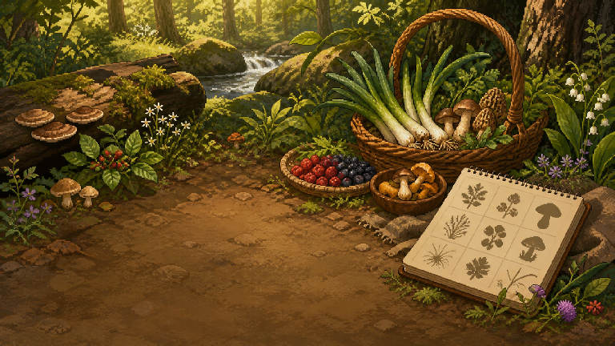
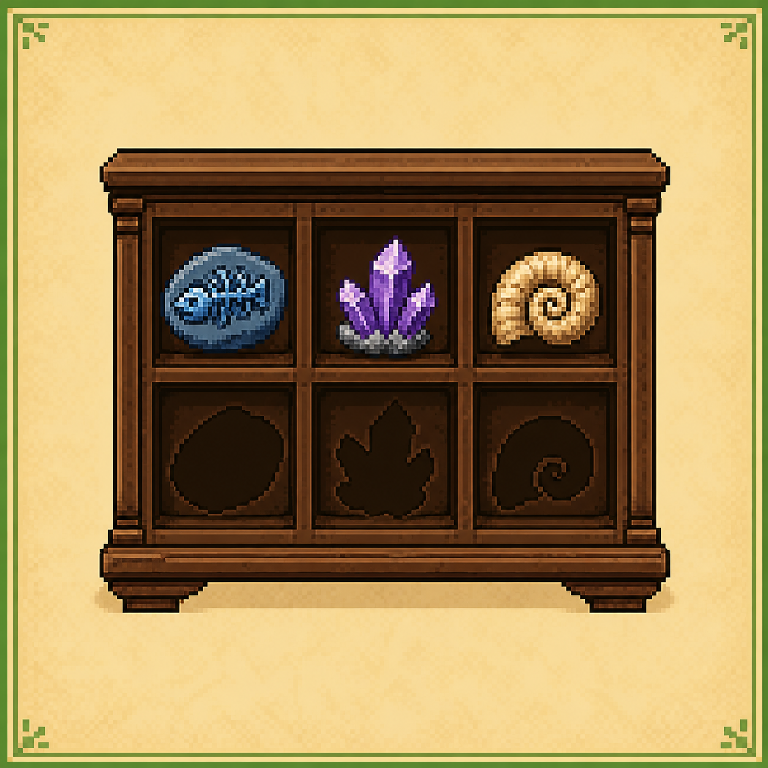
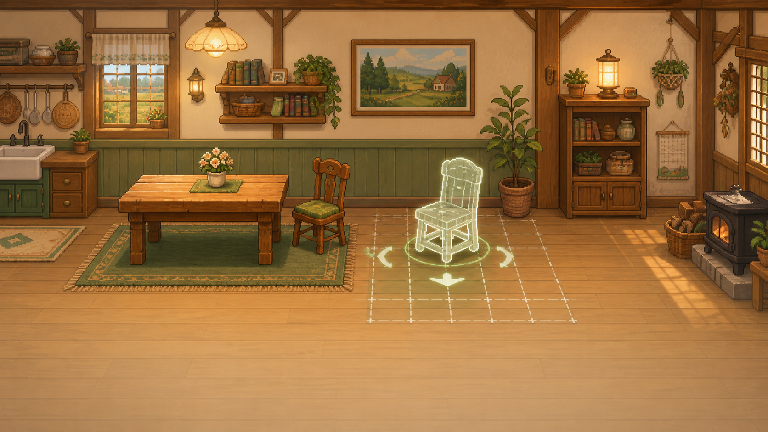
조사 근거와 우선순위는 스타듀 핵심 요소 조사 보고서에 정리했습니다.
세 Phase가 하나의 닫힌 루프로 이어집니다
생활 경제의 뼈대
- 에너지 소비·일일 회복
- 출하함·일일 정산·가격표
- 꾸러미 기여와 보상·세계 해금
- 생활 기술 5종과 레벨 보상
- 제작기 처리 시간·수령
- 도구 강화 범위와 배율
살아 있는 농장
- 4계절 결정적 날씨와 3일 예보
- 비·폭풍·눈과 농장 물주기 연결
- 닭·소, 건초, 달걀·우유 생산
- 축사 수용량과 개체 배정
- 주민 5명 생일·선호·대화
- 시간대 일정과 표시 이벤트
탐색·수집·공간 성장
- 물고기 2종과 조건부 농장 낚시터
- 농장·광산 계절 채집 구역 2곳
- 9종 도감과 박물관 기부·보상 2단계
- 2레벨 범용 농장 작업실
- 회전 가능한 집 장식 2종·시작 배치
- 에디터 CRUD와 런타임 생활 장부 행동
각 Phase마다 “정상 입력” 밖을 공격했습니다
단순 성공 경로가 아니라 오래된 참조, 위조 저장값, 중복 보상, 날짜 오버플로, 부분 차감처럼 데이터가 망가지는 경계를 독립 테스트로 고정했습니다.
| Phase | 공격한 경계 | 결과 |
|---|---|---|
| P0 | stale 출하·제작기, 수량 오버플로, 비원자 상거래, 날짜 커서 위조, 에너지·XP 부분 반영, 선물·돌봄 차감 실패 | fail-closed + 원자 복구 |
| P1 | 다른 날짜 돌봄/생산 2건, 축사 초과 배정 저장, 비활성 날씨 잔상, 현재 날짜와 다른 날씨 저장 | 5/5 PASS |
| P2 | 수집 권한 소실, stale 물고기 아이템, 29일 위조, 무한 weight, 상자·건물 footprint 침범, 중복 보상 ID, 미등록 기부, 위조 채집 아이템 | 10/10 PASS |
마지막 전체 게이트가 추가로 잡은 세 회귀도 수정했습니다: P2 이미지 export 누락, P0 maker 테스트의 P2 채집 간섭, 저장된 이벤트 날씨가 일일 날씨 비활성 상태에서 지워지는 문제.
실제 제품 화면을 두 크기에서 확인했습니다
모든 P2 캡처는 원격 rpg-zzu-stardew-demo 프로젝트를 제품 로드 경로로 연 결과입니다. 이미지는 클릭하면 원본 크기로 볼 수 있습니다.
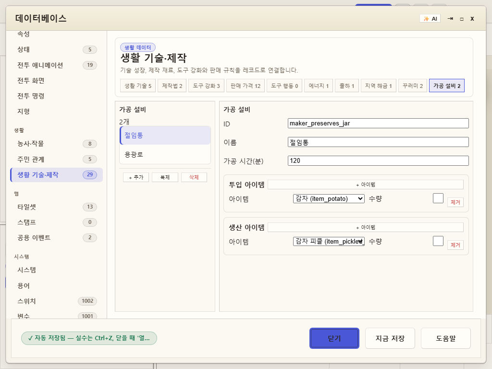
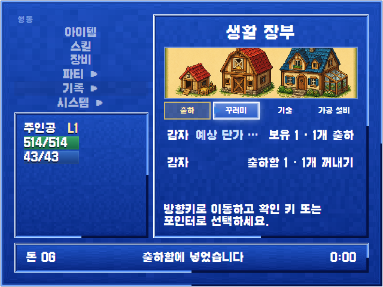
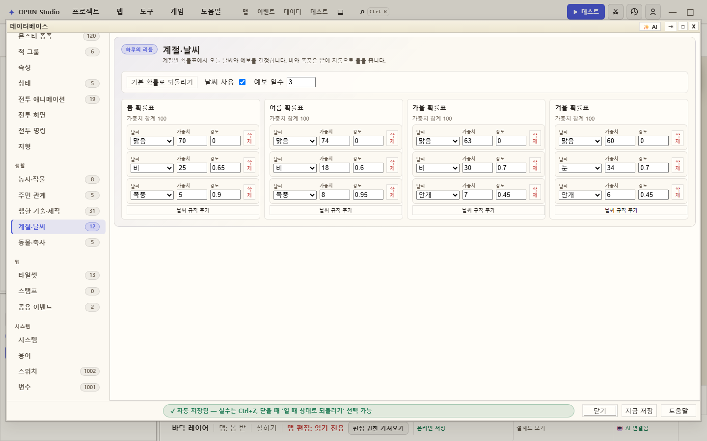
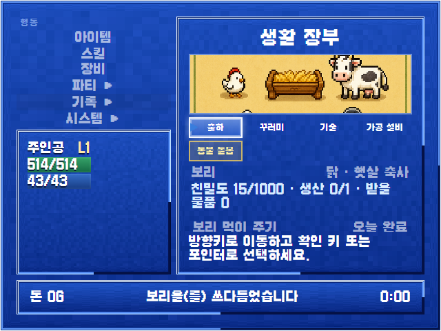
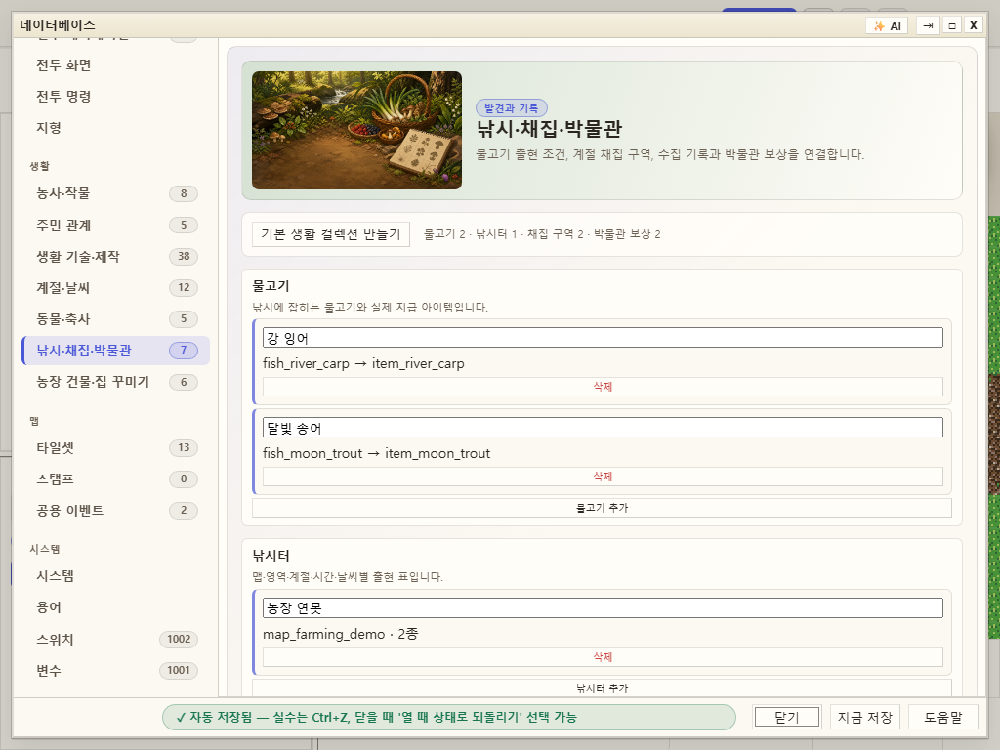
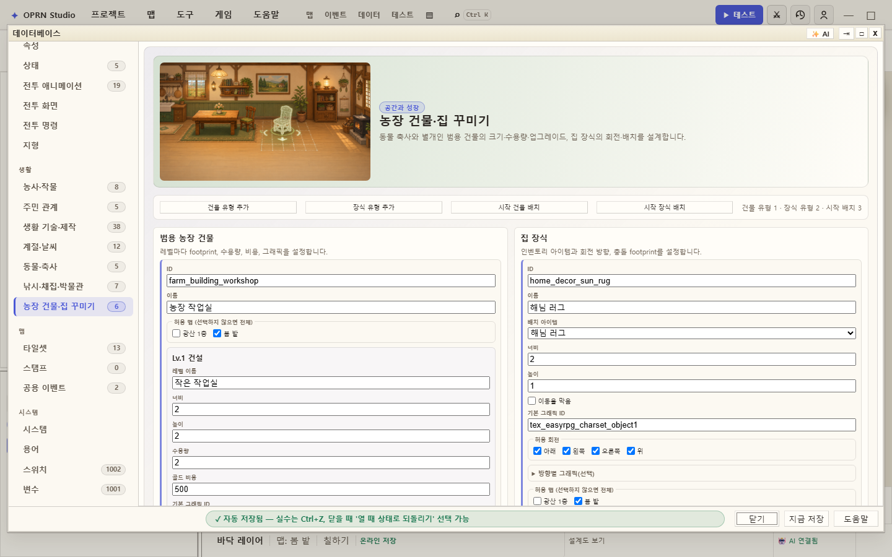
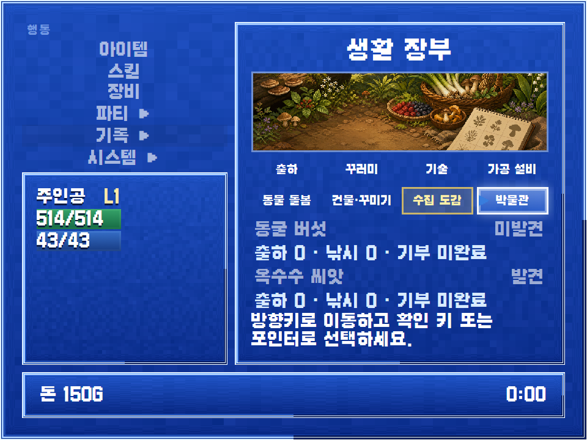
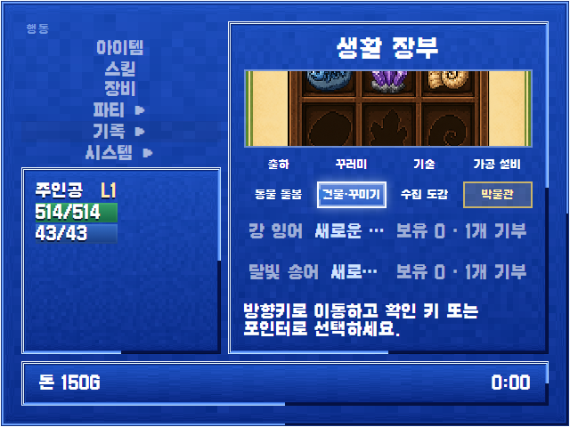
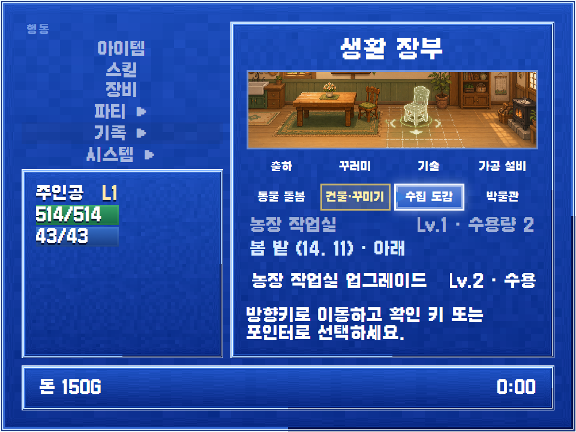
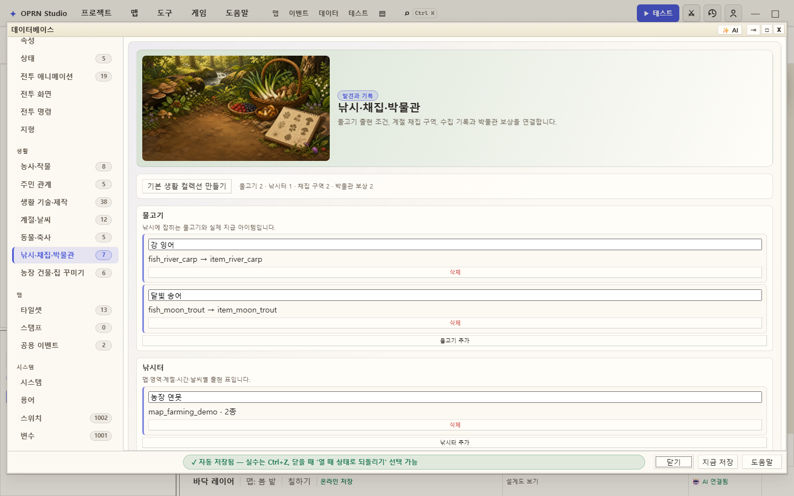
Visual QA가 실제로 잡은 결함: 1024px 편집기에서 채집 히어로 이미지의 고유 폭이 설명을 오른쪽 밖으로 밀었습니다. 헤더의 충돌하는 grid 규칙을 제거하고 overflow 단언을 E2E에 추가한 뒤 재촬영했습니다.
LegacyDb가 정본입니다
저장 후 동일 ID 재로드 성공
코드 fixture나 임시 freshProject 세션으로 끝내지 않았습니다. 실제 원격 저장 경로를 타고 같은 project id로 다시 불러와 authored/reloaded facts가 모두 일치함을 확인했습니다.
rpg-zzu-stardew-demo
sha256
bd9b8c08c077808ff3de43cde16939d2354c1f7445ec5eecb572e47d1cde2641
마지막 숫자
P2 집중 회귀
15개 테스트 파일
원격 브라우저 E2E
편집기 + 런타임
전체 통과 테스트
감독자 gates 실측
기준선 대비 회귀
gates exit 0
| TypeScript | typecheck:app exit 0 |
| OpenWiki | openwiki:verify ok true |
| 기존 기준선 | 148개 실패는 기존 red baseline; 새 회귀 없음 |
| Visual QA | 1024×768 / 1440×900, 이미지 naturalWidth·가로 overflow·메뉴 containment·console/request 확인 |
| LegacyDb | saveKind=saved, reloaded=true, authored/reloaded facts 동일 |
이제 “빈 데이터베이스 항목”이 아닙니다
저작자는 명확한 생활 도메인 탭에서 내용을 만들고, 플레이어는 생활 장부에서 진행도와 행동을 확인하며, 모든 결과는 저장·재로드와 참조 복구를 거칩니다. P0–P2 구현, Phase별 적대 검증, Visual QA, 원격 E2E, LegacyDb 정본 저장, 전체 게이트까지 완료했습니다.